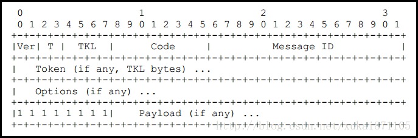
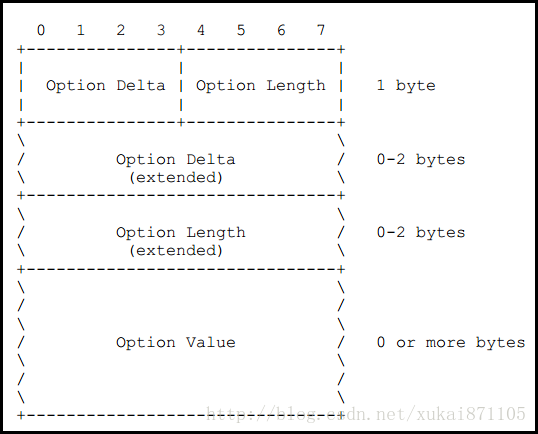
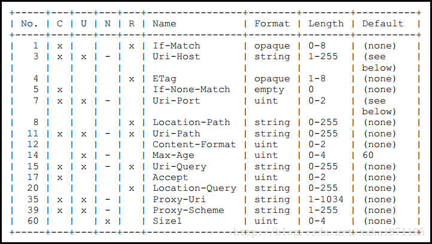

这篇内容是关于AP的改造设计，该设计可分为AP网络扫描功能设计和AP数据传输设计。即AP扫描网络环境数据包，同时将网络数据通过CoAP协议上传。由此，AP可作为网络安全代理起，实时监控无线网络环境数据。
功能模块：
网络扫描功能
基于CoAP协议传输功能
AP网络环境扫描实现
核心实现
该功能模块参考AP开源应用iwcap，packet可在OpenWrt wiki上查询, github源代码。
其核心实现是通过绑定本地无线网卡，建立socket通信通道，完成无线数据包抓取。
具体实现代码：
1 | capture_sock = socket(PF_PACKET, SOCK_RAW, htons(ETH_P_ALL)); #简历socket通道 |
socket通信
在Unix/Linux系统中，为了统一对各硬件的操作，简化接口，不同硬件设备可以被看成一个文件，等同于对磁盘上普通文件的操作。
用socket()函数创建一个网络连接，其返回值就是文件描述符。根据文件描述符，我们可以使用普通的文件操作来传输数据。
相关函数：accept, bind, connect, listen…
头文件：
1 |
函数定义：
1 | int socket(int domain, int type, int protocol); |
参数domain指定使用何种地址类型，常见的包括：
1 | PF_UNIX/PF_LOCAL/AF_UNIX/AF_LOCAL UNIX #进程通信协议 |
参数type：
1 | SOCK_STREAM #提供双向连续且可信赖的数据流, 即TCP. 支持 OOB 机制, 在所有数据传送前必须使用connect()来建立连线状态. |
在此应用中，协议指定从数据链路中接收分组。ETH_P_ALL定义于 /usr/include/linux/if_ether.h中
1 |
CoAP客户端/服务器在AP上的C语言实现
协议参考RFC7252
CoAP以各种语言的具体实现均有版本，如有需要可以在此博客查看。
我在实现上参考了microcoap中的coap.c, coap.h 和 endpoint.h。
传输方案设计
将CoAP客户端部署在AP上，CoAP服务器部署在云平台。
CoAP client 主动向 Server发送CON消息，完成认证和连接。Server向Client发送ACK消息，消息option中存放”start” / “stop” 控制程序开始 / 结束。
程序开始，AP抓取网络数据包，数据内容存放在CoAP数据包 payload中，并以NON类型上传至Server。具体传输过程如图：
接下来简单介绍客户端和服务器代码实现的核心内容。
CoAP包结构
microcoap代码中的核心函数主要包括：coap_build、coap_parse、coap_handle_req 分别执行数据包构建、数据包解析和数据包回复的功能。熟悉CoAP协议的包结构后理解比较简单，下面主要介绍一下CoAP协议的包结构。

【Ver】 版本编号，指示CoAP协议的版本号。类似于HTTP 1.0 HTTP 1.1。版本编号占2位，取值为01B。
【T】报文类型，CoAP协议定了4种不同形式的报文，CON报文，NON报文，ACK报文和RST报文。
【TKL】CoAP标识符长度。CoAP协议中具有两种功能相似的标识符，一种为Message ID（报文编号），一种为Token（标识符）。其中每个报文均包含消息编号，但是标识符对于报文来说是非必须的。
【Code】功能码/响应码。Code在CoAP请求报文和响应报文中具有不同的表现形式，Code占一个字节，它被分成了两部分，前3位一部分，后5位一部分，为了方便描述它被写成了c.dd结构。其中0.XX表示CoAP请求的某种方法，而2.XX、4.XX或5.XX则表示CoAP响应的某种具体表现。
【Message ID】报文编号
【Token】标识符具体内容，通过TKL指定Token长度。
【Option】报文选项，通过报文选项可设定CoAP主机，CoAP URI，CoAP请求参数和负载媒体类型等等。
【1111 1111B】CoAP报文和具体负载之间的分隔符。
Code部分
Code部分被分成了两部分，为了便于阅读，Code被描述为c.dd形式。具体内容可参考RFC7252 #12.1.1 Method Codes
请求
在CoAP请求中，Code被定义为CoAP请求方法，这些方法有GET、POST、PUT和DELETE，这些方法和HTTP协议非常相似。
（0.01）GET方法——用于获得某资源
（0.02）POST方法——用于创建某资源
（0.03）PUT方法——用于更新某资源
（0.04）DELETE方法——用于删除某资源
响应
在CoAP响应中，Code被定义为CoAP响应码，类似于HTTP 200 OK等等。
（2.01）Created
（2.02）Deleted
（2.03）Valid
（2.04）Changed
（2.05）Content。类似于HTTP 200 OK
（4.00）Bad Request 请求错误，服务器无法处理。类似于HTTP 400。
（4.01）Unauthorized 没有范围权限。类似于HTTP 401。
（4.02）Bad Option 请求中包含错误选项。
（4.03）Forbidden 服务器拒绝请求。类似于HTTP 403。
（4.04）Not Found 服务器找不到资源。类似于HTTP 404。
（4.05）Method Not Allowed 非法请求方法。类似于HTTP 405。
（4.06）Not Acceptable 请求选项和服务器生成内容选项不一致。类似于HTTP 406。
（4.12）Precondition Failed 请求参数不足。类似于HTTP 412。
（4.15）Unsuppor Conten-Type 请求中的媒体类型不被支持。类似于HTTP 415。
（5.00）Internal Server Error 服务器内部错误。类似于HTTP 500。
（5.01）Not Implemented 服务器无法支持请求内容。类似于HTTP 501。
（5.02）Bad Gateway 服务器作为网关时，收到了一个错误的响应。类似于HTTP 502。
（5.03）Service Unavailable 服务器过载或者维护停机。类似于HTTP 503。
（5.04）Gateway Timeout 服务器作为网关时，执行请求时发生超时错误。类似于HTTP 504。
（5.05）Proxying Not Supported 服务器不支持代理功能。
在程序中，code占8位，具体编程实现：
1 |
|
Option部分
CoAP支持多个Option，CoAP的Option的表示方法比较特殊，采用增量的方式描述，细节可参考RFC7252 #3.1

一般情况下Option部分包含Option Delta、Option Length和Option Value三部分。
【Option Delta】表示Option的增量，当前的Option的具体编号等于之前所有Option Delta的总和。
【Option Length】表示Option Value的具体长度。
【Option Value】表示Option具体内容
CoAP中所有的Option都采用编号的方式，这些Option及编号的定义如下图所示。

在这些option中，Uri-Host、Uri-Port、Uri-Path和Uri-Query等和资源“位置”和参数有关。
【3】Uri-Host:CoAP主机名称，例如iot.eclipse.org
【7】Uri-Port:CoAP端口号，默认为5683
【11】Uri-Path:资源路由或路径，例如\temperature。资源路径采用UTF8字符串形式，长度不计第一个”\”。
【15】Uri-Query:访问资源参数，例如?value1=1&value2=2，参数与参数之间使用“&”分隔，Uri-Query和Uri-Path之间采用“?”分隔。
在这些option中，Content-Format和Accept用于表示CoAP负载的媒体格式
【12】Content-Format:指定CoAP复杂媒体类型，媒体类型采用整数描述，例如application/json对应整数50，application/octet-stream对应整数40。
【17】Accept: 指定CoAP响应复杂中的媒体类型，媒体类型的定义和Content-Format相同。
CoAP协议中支持多个Option，例如
第一个Option Delta=11，表示该Option表示Uri-Path(11)
第二个Option Delta=1，表示该Option=1+11，表示Content-Format(12)
第三个Option Delta=3，表示该Option=3+1+11，表示Uri-Query(15)
CoAP采用这样的方式表示多个Option，而每种Option都可以在HTTP协议中找到对应项。